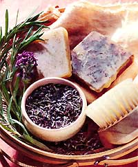

Herbal Remedies
Create a simple healing formula.
Sandy Maine made her first bar of soap in her kitchen. She loved making soap so much, she eventually went on to found a small business, SunFeather Soaps, which occupies three buildings and employs fifteen people. When MOTHER'S intern, Jennifer Barros, saw a copy of Maine's recent book Soothing Soaps for Healthy Skin (Interweave Press, 1997), she was inspired to fill some muffin tins with homemade herbal soap.
The recipe I chose was lavender and rosemary soap, which is found under a section called "Soaps for Blemished Skin." Maine gives a brief description of each soap and explains that both lavender and rosemary are "antiseptic, anti-inflammatory, and beneficial for treating wounds, blemishes, boils, dermatitis, herpes, fever blisters, and more!"
The first step, and probably the most difficult part, was finding the ingredients. I needed lavender flowers, rosemary leaves, lavender oil, and rosemary oil. For those who can get their hands on fresh herbs, Maine explains how to dry them yourself and also how to extract the oils. It was February, so I was forced to opt for dried herbs rather than fresh ones. Unfortunately, dried herbs and oils are not exactly sold at every corner store, but at least you can obtain herbs, oils, and glycerin by mail order. Once I arrived home, glad to have completed my shopping mission, I began the actual process of making a healing soap.
I made an infusion with the dried lavender flowers and rosemary leaves. This only took about ten minutes and gave me a sneak peak at what my kitchen would smell like all day. Then, I used a double boiler to melt the soap base into liquid form. Once this was done, I added the infusion, the oils, and some pulverized rosemary leaves. I stirred a little to ensure even distribution, and then immediately poured the liquid into molds. All together, this took about thirty minutes.
Because I couldn't wait to send away for a good glycerin soap base, I used what I found at a local pharmacy. I don't know if it was the quality of the soap or the molds I used, but the one problem I came across was removing the soaps from their molds once they had hardened. The soap is supposed to harden after one hour, but I left mine overnight to ensure that prying them out of the molds would not harm their shape.
For molds, I used small ridged muffin tins. When the soaps hardened, it was very difficult to maneuver them out. The longer I let them sit, the easier it was to get the soap out. Lining the molds with plastic wrap or using a plastic soap-mold might facilitate this procedure.
3 cups glycerin soap base
1/4 Cup infusion of lavender flowers and rosemary leaves
1 1/2 teaspoon, lavender oil
1/2 teaspoon rosemary oil
1 teaspoon pulverized dried rosemary
Combine melted base and herbal ingredients stir until blended, then pour into molds and Cool.
* Infusion, are made he pouring steaming water over plant pans. three tablespoons of clued or fresh her]) per Cup of water steeped It'll minutes. Non water is best.
The recipe called for three cups of glycerin soap base. This is the equivalent of about six average-sized bars of glycerin soap, but I ended up with about a dozen smaller, more decorative soaps, which I gave to friends and family.
I found this particular soap to be inappropriate for people with dry skin. I do use it in the shower at times or to wash my face and find it works well and smells wonderful. My grandmother, for one, is hooked. She washes her face with it every night, claiming it makes her skin feel like silk. On the whole, the entire procedure is very economical, especially if you pick the herbs and extract the oils yourself. Although each recipe calls for a small quantity of each substance, ingredients may be sold only in larger quantities. To get your money's worth, you might even consider selling 'em yourself or through a local farm stand.
Soothing Soaps for Healthy Skin by Sandy Palm is available for $10.95 through MOTHER'S Bookshelf (see page 811 by calling 1,800-8889098 and asking for book MEB260.
|
 PHOTO: JOE COCA |
|
|